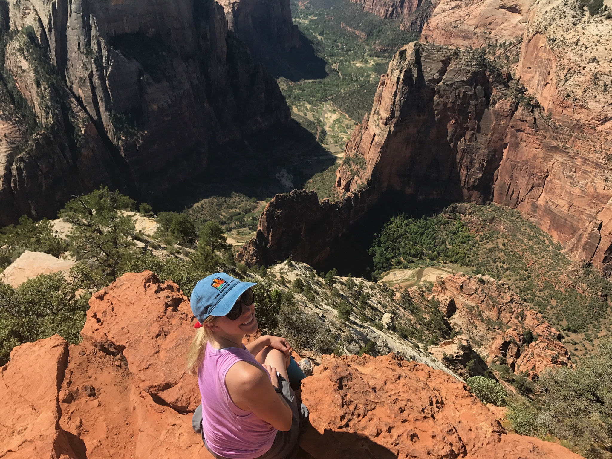

Hiking and Traveling
Bryce Canyon National Park
Hiking is one of my favorite activities - I love being outdoors! I was lucky enough to live in Utah for a couple of years and experience a lot of their amazing national parks. I love getting to experience new places through hiking and see all of the cool things the outdoors has to offer!

Zion National Park
Zion National Park
Great Basin National Park
St. George, Utah
 Honolulu, Hawaii
Honolulu, Hawaii
Shenandoah National Park
Rome, Italy
My dad and I love to travel together. We've gotten to go to some exciting places over the years! COVID has kept us from going on any exciting adventures lately, but here are some fun trips we've gone on.
Grindelwald, Switzerland
Vatican City
Paris, France
London, England